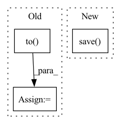

Pattern ID :37737

Before Change
reg_backbone = FeatureRegularization()
elif args.regularization_type == "attention_feature_map":
if not os.path.exists(args.channel_weight):
temporary_classifier = Classifier(backbone, num_classes).to(device)
temporary_optimizer = SGD(temporary_classifier.get_parameters(args.lr), momentum=args.momentum, weight_decay=args.wd, nesterov=True)
temporary_loader = DataLoader(train_dataset, batch_size=args.batch_size_channel_weight, shuffle=True, num_workers=args.workers, drop_last=False)
temporary_scheduler = torch.optim.lr_scheduler.ExponentialLR(temporary_optimizer, gamma=math.exp(math.log(0.1) / args.lr_decay_epochs_channel_weight))
criterion = nn.CrossEntropyLoss()
After Change
attention_file = os.path.join(logger.root, args.attention_file)
if not os.path.exists(attention_file):
attention = calculate_channel_attention(train_dataset, return_layers, args)
torch.save(attention, attention_file)
else:
print("Loading channel attention from", attention_file)
attention = torch.load(attention_file)
In pattern: SUPERPATTERN
Frequency: 3
Non-data size: 3
Instances
Fragment ID: 108376517
Project Name: thuml/transfer-learning-library
Commit Name: ce38964ed6fc09262ae95c971acef5a616e106f1
Time: 2021-03-18
Author: 13126830206@163.com
File Name: examples-ft/classification/delta.py
M Class Name: AnonimousClass
N Class Name: AnonimousClass
M Method Name: main(1)
N Method Name: main(1)
M Parent Class:
N Parent Class:
M File Name: examples-ft/classification/delta.py
N File Name: examples-ft/classification/delta.py
M Start Line: 34
M End Line: 147
N Start Line: 33
N End Line: 122
'>
Before Change
total_loss = 0
for padded_text, lengths, labels in train_loader_poison:
padded_text = padded_text.to(device)
labels = labels.to(device)
output = model(padded_text, lengths).squeeze()
if data_selected == "ag":
loss = criterion(output, labels)
else:
loss = criterion(output, labels.float())
optimizer.zero_grad()
loss.backward()
clip_grad_norm_(model.parameters(), max_norm=1)
After Change
print("*" * 89)
print("finish all, success rate in test: {}, clean acc: {}".format(poison_success_rate_test, clean_acc))
if args.save_path != "":
torch.save(model.module, args.save_path)
if __name__ == "__main__":
train()
'>
Fragment ID: 108376519
Project Name: thunlp/hiddenkiller
Commit Name: 9a7b32039f64ade7ff805db0334c232d147b245d
Time: 2021-09-24
Author: yangyichen6666@gmail.com
File Name: experiments/run_poison_lstm.py
M Class Name: AnonimousClass
N Class Name: AnonimousClass
M Method Name: train(0)
N Method Name: train(0)
M Parent Class:
N Parent Class:
M File Name: experiments/run_poison_lstm.py
N File Name: experiments/run_poison_lstm.py
M Start Line: 109
M End Line: 130
N Start Line: 108
N End Line: 141
'>
Before Change
total_loss = 0
for padded_text, attention_masks, labels in train_loader_poison:
padded_text = padded_text.to(device)
attention_masks = attention_masks.to(device)
labels = labels.to(device)
output = model(padded_text, attention_masks).squeeze()
loss = criterion(output, labels)
optimizer.zero_grad()
After Change
print("*" * 89)
print("finish all, attack success rate in test: {}, clean acc in test: {}".format(poison_success_rate_test, clean_acc))
if args.save_path != "":
torch.save(model.module, args.save_path)
def transfer_bert():
'>
Fragment ID: 108376518
Project Name: thunlp/hiddenkiller
Commit Name: 2331b23dd09588c3330e5009870e2aaf2d983d04
Time: 2021-09-23
Author: yangyichen6666@gmail.com
File Name: experiments/run_poison_bert.py
M Class Name: AnonimousClass
N Class Name: AnonimousClass
M Method Name: train(0)
N Method Name: train(0)
M Parent Class:
N Parent Class:
M File Name: experiments/run_poison_bert.py
N File Name: experiments/run_poison_bert.py
M Start Line: 115
M End Line: 154
N Start Line: 52
N End Line: 90